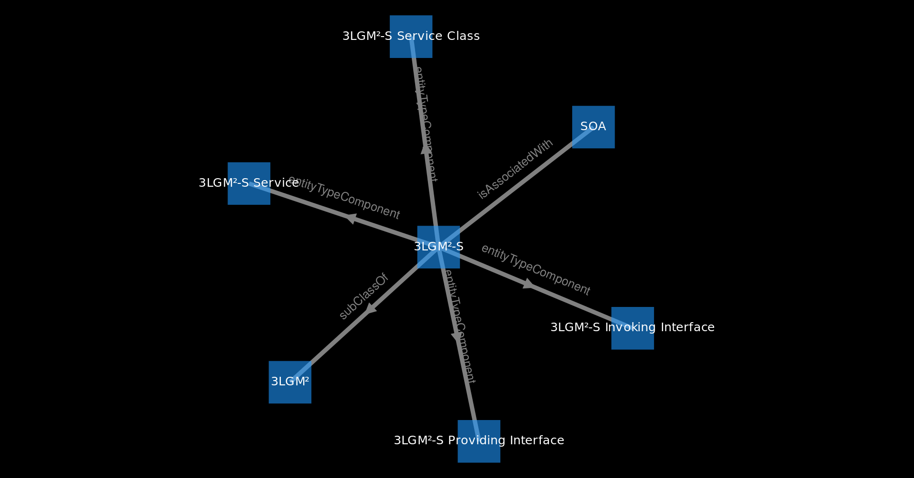
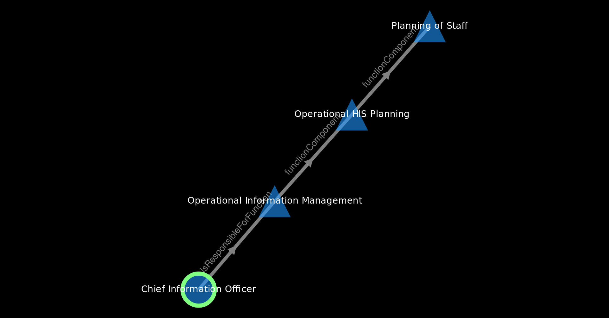

SNIK Graph is the research prototype of a graph visualization of the Hospital Information Management ontology created by the SNIK research project of the IMISE research group of the medical faculty of the University of Leipzig.
The graph consists of nodes, which are concepts from the ontology, and edges between nodes, which are relationships (properties) between concepts. Select an edge to see the edge label (relationship type) and direction.
Context Menu
Right click on a node/edge to open the context menu and choose among:
Description
Opens the node in an RDF browser, which shows all its properties and values.
Star

Highlights the node and all it's directly connected nodes.
Directed Star
Shows only target neighbours (outgoing edges).
Path

Shortest Path between source and target nodes (has to be set before).
Spiderworm
Is only shown when source and target nodes are set.
The Spider Worm consists of the shortest path between a selected source and target node plus all edges of the target node and the other node of each of those edges.
Displaying a spiderworm hides all other nodes and edges.
Combine close Matches
Merge equivalent classes from different subontologies.
Edit/report
If you are a domain expert and notice incorrectly modelled facts or connections of a node feel free to send us an issue.
Class use
Visualizes the interplay of role, function and entity type (related to the Meta model).
Remove
Removes the selected item from the view (until the graph is reloaded).
Set path as source
Sets the starting point for path operations.
Doublestar (extended mode)
Is only shown when source and target nodes are set.
The double star is like the spiderworm but shows connected nodes for both source and target, not just the target.
Starpath (extended mode)
Creates a path and star every node along it.
Circle star (extended mode)
A star using a circular layout.
LodLive (extended mode)
Third party data visualization exploration tool.
Remove permanently (dev mode)
Send us an issue to delete the selected item permanently. Also removes it until graph is reloaded.
Onto Wiki (dev mode)
Access restricted ontology editing tool.
Debug (dev mode)
Get debug information to the edge/node from the JSON File
Menu
File
Holds different File Options like loading and saving the graph in different ways.
Filter
A collection of filters to display relevant subgraphs.
Options
Here you can find different checkboxes for the scope of the context menu, for day mode, cumulative Search and the 'Seperate Subontologies' function, which spreads the SNIK Graph into subgraphs of the subontologies.
Operations
This part of the menu holds the layout features. You can use Tight Layout (for a more narrow view), compound layout (knows combined matches), also you can recalculate the layout or reset all operations to get to the starting point of the visualization.
Tight LayoutCompound Layout
Services
Language
Language switch, you can choose between English, German and Persian
Help
Common Help Menu, holds e.g. this manual
Search Field
Full text search with a fuzzy approach for best results.
Layout Buttons
Shortcut Buttons for most often used layout operations. Described in Operations
Zoom Element (down right postion)
A google-maps-like pan and zoom element for the navigation in the graph
Requirements and Technical Problems
SNIK Graph runs in your browser using JavaScript, so any modern browser with activated JavaScript should work. Obviously this includes deactivating noScript and similar extensions.
If you encounter technical problems, please submit a bug report ticket.